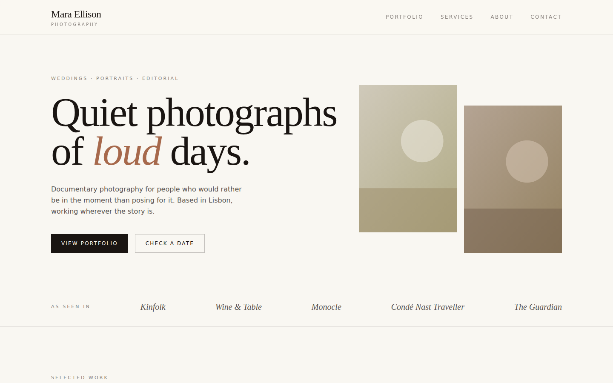
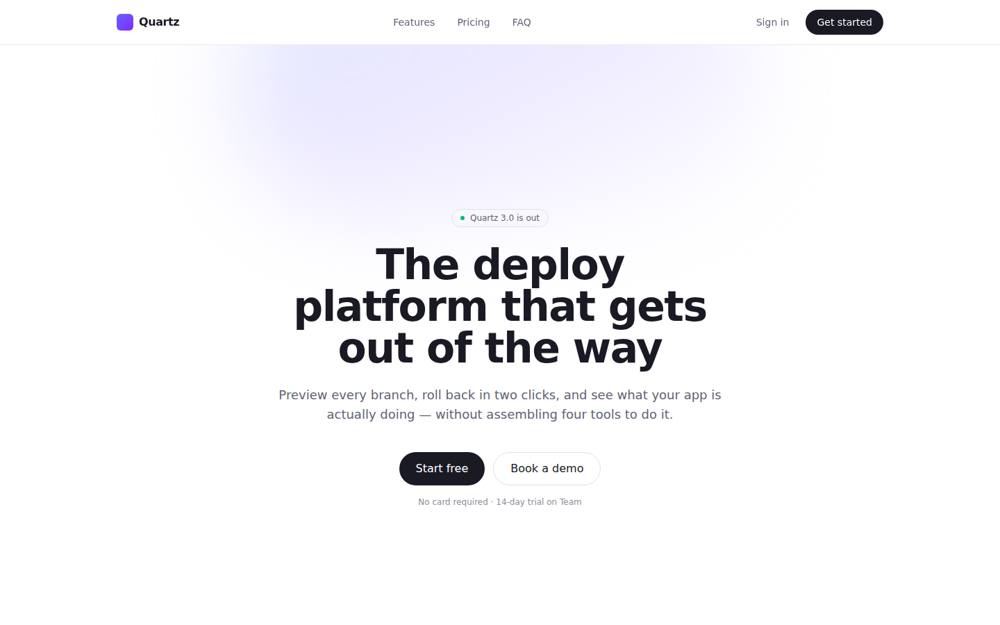

Photographer Portfolio v1.1.0
An editorial portfolio for a working photographer: home, portfolio with category filter, a page per gallery, about, services with FAQ, and an enquiry form.
Templates, apps, design systems and skills for the canvas editor. The editor reads json/index.json.

An editorial portfolio for a working photographer: home, portfolio with category filter, a page per gallery, about, services with FAQ, and an enquiry form.

Quartz, the canvas scaffolding page authored as named React components and opted into @canvas/react — the starting point for a project the editor can read by component.
A DESIGN.md reference for Airbnb's public marketing surface — colour, type, spacing, radius, elevation and component tokens with the rules for using them. Unofficial and unaffiliated.
A DESIGN.md reference for IKEA's public marketing surface — colour, type, spacing, radius, elevation and component tokens with the rules for using them. Unofficial and unaffiliated.
A DESIGN.md reference for Notion's public marketing surface — colour, type, spacing, radius, elevation and component tokens with the rules for using them. Unofficial and unaffiliated.
A DESIGN.md reference for Railway's public marketing surface — colour, type, spacing, radius, elevation and component tokens with the rules for using them. Unofficial and unaffiliated.
A DESIGN.md reference for Shopify's public marketing surface — colour, type, spacing, radius, elevation and component tokens with the rules for using them. Unofficial and unaffiliated.
A DESIGN.md reference for Stripe's public marketing surface — colour, type, spacing, radius, elevation and component tokens with the rules for using them. Unofficial and unaffiliated.
A DESIGN.md reference for Uber's public marketing surface — colour, type, spacing, radius, elevation and component tokens with the rules for using them. Unofficial and unaffiliated.
A DESIGN.md reference for Vercel's public marketing surface — colour, type, spacing, radius, elevation and component tokens with the rules for using them. Unofficial and unaffiliated.
Teaches the assistant to turn a DESIGN.md design system into a project's theme and restyle components by its rules.
How to add or update a template, app, design system or skill in this marketplace and regenerate the index.